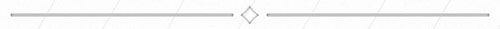

Dorothy uyandığında, güneşin ışınları parlıyor, çoktan uyanmış olan Toto kuşları kovalıyordu, Korkuluk ise köşede dikilmiş onu bekliyordu. "Su bulmalıyız," dedi kız. "Suyu ne yapacaksın?" diye sordu Korkuluk.
"Yüzümü yıkayacağım ve kuru ekmek boğazıma takılmasın diye içeceğim."
"Etten, kemikten bir insan olmak oldukça zahmetli olmalı," dedi Korkuluk, düşünceli bir ifadeyle, "uyumak, yemek ve içmek zorundasın. Ama beynin var ve mantıklı düşünebilme yeteneği için bu kadar zahmete katlanmaya değer."
Kulübeden ayrıldılar ve Dorothy'nin yıkanıp kahvaltı yapması için küçük bir kaynak buldular. Sepette fazla ekmek kalmamıştı, kendisine ve Toto'ya ancak bugün yetecek kadar vardı, bu yüzden Korkuluk'un yemek zorunda olmamasına şükran duydu.
Yemeğini bitirdi, tam sarı tuğlalı yola çıkmaya hazırlanırlarken yakınlardan gelen bir inleme sesiyle irkildi.
"Bu da neydi?" diye sordu, ürkmüşçesine.
"Bilemiyorum," diye yanıtladı Korkuluk, "ama gidip bakabiliriz."
O sırada bir inleme daha duydular, ses arkalarından geliyordu. Henüz birkaç adım gitmişlerdi ki, Dorothy ağaçların arasında güneş ışığıyla parlayan bir şey fark etti. Oraya koştu ve hayretle bağırarak aniden durdu.
Yarı yarıya kesilmiş büyük bir ağacın yanında ellerinde havaya kaldırdığı bir baltayla duran tamamıyla tenekeden yapılmış bir adam vardı. Başı, kolları ve bacakları gövdesine eklemlerle bağlanmıştı ama bu eklemleri oynatamıyormuş gibi tamamen hareketsiz duruyordu.
Dorothy ve Korkuluk bu görüntüye hayretle bakarlarken, Toto havladı ve tenekeden bacakları ısırdı ama bu sadece dişlerini acıtmaya yaradı.
"İnleyen sen miydin?" diye sordu Dorothy.
"Evet bendim," diye yanıtladı Teneke Adam, "Bir yıldan daha uzun zamandır inliyorum, ama daha önce duyan ya da yardımıma gelen olmamıştı."
"Senin için ne yapabilirim?" diye sordu kız, adamın sesindeki hüzünden etkilenmişti. "Bir yağdanlık alıp eklemlerimi yağla," diye yanıtladı. "O kadar paslandılar ki onları hiç hareket ettiremiyorum, güzelce yağlanırsam kısa zamanda düzelirim. Kulübemdeki rafın üstünde bir yağdanlık bulabilirsin."
Dorothy hemen kulübeye koşup yağdanlığı buldu sonra geri dönüp aceleyle sordu: "Eklemlerin nerede?"
"Önce boynumu yağla," diye yanıtladı Teneke Adam. Kızın yağladığı boynu o kadar paslanmıştı ki adamın başını hareket ettirebilmesi için Korkuluk'un başını tutup yavaşça sağa, sola döndürmesi gerekti.
"Şimdi kollarımdaki eklemleri yağla," dedi Teneke Adam. Korkuluk yağlanan kolları pas tamamen gidene kadar dikkatle oynattı, kısa süre içinde yeni gibi olmuşlardı.
Teneke Adam rahatlayarak içini çekti ve baltasını indirip bir ağaca dayadı.
"Ay, ne kadar da rahatladım," dedi. "Paslandığımdan beri havada tuttuğum baltayı en sonunda indirebildiğime çok memnunum. Şimdi bacaklarımı da yağlarsan eskisi gibi olurum."
Bunun üzerine bacaklarını da hareket ettirebilene kadar yağladılar. Çok kibar ve kıymet bilen biri olduğundan onlara tekrar, tekrar teşekkür etti.
"Gelmemiş olsaydınız sonsuza kadar orada kalabilirdim," dedi, "hayatımı kurtardınız. Yolunuz nasıl buraya düştü?"
"Büyük Oz'u görmek için Zümrüt Şehir'e gidiyoruz," diye yanıtladı kız, "ve gece senin kulübende konakladık."
"Oz'u neden görmek istiyorsunuz?" diye sordu.
"Beni Kansas'a göndermesini istiyorum, Korkuluk ise başına bir beyin koymasını istiyor," diye yanıtladı.
Teneke Adam bir an derin düşüncelere dalmış göründü. Sonra şöyle dedi:
"Oz'un bana bir kalp verebileceğini mi düşünüyorsun?"
"Bence verebilir," diye yanıtladı Dorothy, "onun için Korkuluk'a beyin vermek kadar kolay olacaktır."